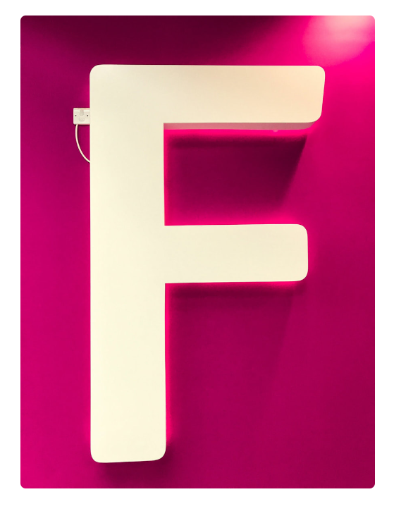
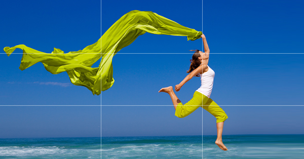
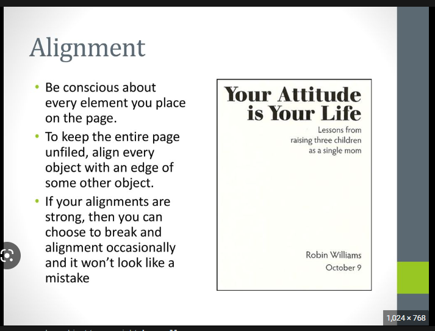

Visual Hierachy

Visual hierarchy is a technique used to arrange visual elements in a design to create a sense of order and guide the viewer's attention through the content. The F design is based on the idea that viewers tend to scan web pages in an "F" pattern, starting with a horizontal movement across the top of the page, followed by a vertical movement down the left side of the page, and then another horizontal movement across the middle of the page. To create a visual hierarchy using the F design, you should place important content at the top of the page, use bold and contrasting typography for headings and subheadings, create clear visual separation between different sections using white space and visual breaks, and use images and other visual elements to guide the viewer's eye. Following these guidelines will help you create a clear and effective visual hierarchy, making it easier for viewers to find the information they need and stay engaged with your content.
The rule of Thirds

The rule of thirds is a compositional guideline that is used in visual arts, such as photography, painting, and graphic design, to create balanced and aesthetically pleasing images. It involves dividing an image into thirds both horizontally and vertically, creating nine equal parts, and placing the subject or points of interest along these lines or at the points where they intersect. for example In graphic design, elements such as text or images can be placed along the lines or points of intersection to create a more dynamic and visually appealing layout and also In paintings, the focal point can be placed off-center along one of the lines or points of intersection to create a sense of movement and balance in the composition.
PARC alignment

PARC stands for Proximity, Alignment, Repetition, and Contrast, which are four design principles used to create more effective and efficient designs. Proximity refers to grouping related items together, alignment refers to ensuring that elements are visually connected, repetition refers to using consistent design elements throughout a design, and contrast refers to using visual differences to highlight important elements. By applying these principles, designers can create designs that are easy to use, visually appealing, and communicate information effectively to users using grids to place items in order well aligned using grids